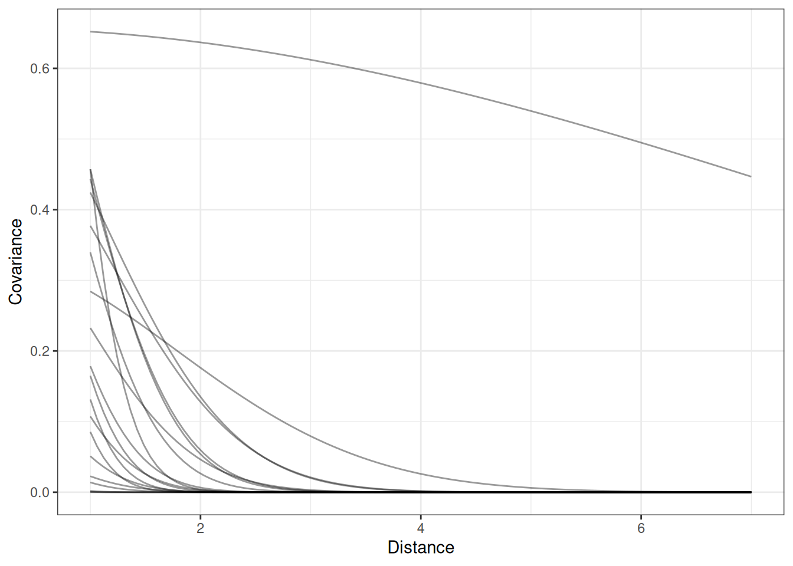

coords <- data.frame(
name = c('T', 'C', 'P', 'U'),
x = c(1, 2, 0, 1),
y = c(1, 1, 1, 0)
)
dagify(
T ~ P + C + U,
P ~ U,
coords = coords
) |> ggdag(seed = 2, layout = 'auto') + theme_dag()Lecture 16 Notes
Gaussian processes
Gaussian process is “an infinite-dimensional generalization of multivariate normal distributions”. Instead of a conventional covariance matrix, use a kernel function that generalizes to infinite dimensions/observations/predictions. It allows you to use a smaller number of parameters, inside the covariance matrix, with regularization.
Given the kernel function, the covariance can get arbitrarily large because it doesn’t add any more parameters.
The kernel function can be based on differences, eg. space, time, age. These are continuous ordered categories. Partial pooling where points that are closer together to pool more.
The kernel function describes the expected covariance between any two points separated by a given distance. The kernel function is estimated along with the other parameters.
Also see:
- Automatic relevance determination (ARD) for multiple distance dimensions
- Multi-output Gaussian processes, eg. multiple traits at the same time with covariation
- Telemetry, navigation (Kalman filter)
Kernel functions
Goal is to describe the macro state, “what’s the shape of decline in covariation”. Some options:
Quadratic (L2)
- Gaussian covariance kernel
Ornstein-Uhlenbeck
- exponential decline
Periodic
- cyclical variables eg. time of day, orientation
Example: oceanic technology
Number of tool types associated with population size
Spatial covariation where islands close together share unobserved confounds and innovations. The effect of spatial covariation is to make closer islands have more similar tools or change in tools.
- T: tools
- P: population
- C: contact
- U: unobserved confounds
Statistical model without spatial covariation
Functional relationship
\[\Delta(T) = \alpha P^{\beta} - \gamma T\]
- \(\Delta(T)\): change in tools
- \(\alpha\): innovation rate
- \(\beta\): diminishing returns
- \(\gamma\): rate of loss
Statistical model
\[T_{i} \sim Poisson (\lambda_{i})\] \[\lambda_{i} = \hat{T}\] \[\hat{T} = \frac{\alpha P ^{\beta}}{\gamma}\]
Statistical model with spatial covariation, but without population
Varying intercepts model
\[T_{i} \sim Poisson (\lambda_{i})\]
\[log \lambda_{i} = \bar{\alpha} + \alpha_{S_{[i]}}\] \[\hat{T} = \frac{\alpha P ^{\beta}}{\gamma}\]
- \(\bar{\alpha}\): mean across islands
- \(\alpha_{S_{[i]}\): deviation from mean by island
\[\begin{bmatrix} \alpha_{1} \\ \alpha_{2} \\ .. \\ \alpha_{10} \end{bmatrix} \sim MVNormal(\begin{bmatrix} 0 \\ 0 \\ ... \\ 0 \end{bmatrix}, K)\] - vector of varying effects - vector of zeros - covariance matrix, a 10x10 kernel
Statistical model with quadratic L2 kernel, without population size
Varying intercepts model
\[T_{i} \sim Poisson (\lambda_{i})\]
\[log \lambda_{i} = \bar{\alpha} + \alpha_{S_{[i]}}\] \[\begin{bmatrix} \alpha_{1} \\ \alpha_{2} \\ .. \\ \alpha_{10} \end{bmatrix} \sim MVNormal(\begin{bmatrix} 0 \\ 0 \\ ... \\ 0 \end{bmatrix}, K)\]
\[k_{i, j} = n^{2} exp(-\rho d^{2}_{i, j})\] - \(k_{i, j}\): covariance - \(n^{2}\): max covariance - \(\rho\): rate of decline - \(d^{2}_{i, j}\): distance i, j
\[\bar{\alpha} \sim Normal(3, 0.5)\] \[n^{2} \sim Exponential(2)\] \[\rho^{2} \sim Exponential(0.5)\]
Prior predictive simulation
n <- 20
DT <- CJ(dist = seq(1, 7, length.out = 100), id = LETTERS[seq.int(20)])
DT[, eta := rexp(1, 2), by = id]
DT[, rho := rexp(1, 0.5), by = id]
DT[, covar := eta * exp(-rho * dist ^ 2)]
ggplot(DT) +
geom_line(aes(dist, covar, group = id), alpha = 0.4) +
labs(x = 'Distance', y = 'Covariance')
Statistical model with quadratic L2 kernel and population size
\[T_{i} \sim Poisson (\lambda_{i})\] \[log \lambda_{i} = \frac{\bar{\alpha}P^{\beta}}{\gamma} exp(\alpha_{S_{[i]}})\] \[\begin{bmatrix} \alpha_{1} \\ \alpha_{2} \\ .. \\ \alpha_{10} \end{bmatrix} \sim MVNormal(\begin{bmatrix} 0 \\ 0 \\ ... \\ 0 \end{bmatrix}, K)\] \[k_{i, j} = n^{2} exp(-\rho d^{2}_{i, j})\] \[\bar{\alpha}, \beta, \gamma \sim Exponential(1)\] \[n^{2} \sim Exponential(2)\] \[\rho^{2} \sim Exponential(0.5)\]
Phylogenetic regression
Phylogenetic comparative methods are dominated by causal salad. Tossing factors into regression and interpreting every coefficient as causal. “Controlling for phylogeny” is often required by reviewers, papers often use AIC or cross validation criteria as a stand-in for causal inference.
Phylogenetic causation is a dynamical system where causation passes from one generation to the next, from the most recent ancestor to the subsequent time. The evolutionary history, however, is not known so the micro histories that may have happened have impacted the macro state, ie the pattern of covariation of living species. We want to model in a way that averages over the large number of possible histories.
Two conjoint problems:
- What is the history (phylogeny)?
- has improved with modern genomics but there is huge uncertainty, process not stationary and there is no one phylogeny correct for all traits
- How to use it to model causes?
Like social networks, phylogenies do not exist.
Different parts of the genome have different histories. Tree space is hard to explore statistically.
An evolutionary model and tree structure give us the pattern of covariation at the tips. Covariance declines with phylogenetic distance. The patttern of covariation at the tips can be used as a proxy for the unobserved confounds.
This requires an assumption about the covariance relationship with phylogenetic distance. Some options include the Ornstein-Uhlenbeck and Brownian motion.
Some next steps:
- What about phylogenetic uncertainty?
- Is group size a heritable trait?
- There is joint causation in complex machines (gliders and hedgehogs) over time
- Alternatives to regressions
- Ringen, Martin, Jaeggi 2021
- Gonzalez-Forero, Gardner 2018